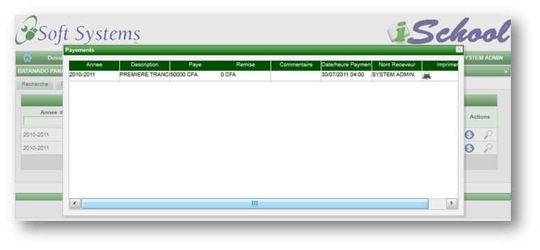

Cette page permet d'inscrire et d'acceder au dossier complet de l'etudiant. Elle comprend plusieurs tabulations:
Recherche
La page de recherche permet de retrouver les etudiants et de consulter leur dossier.
La recherche se fait par le matricule, nom, prenom ou par la classe.
Un deuxieme niveau de recherche permet de filtrer dynamiquement par le matricule, nom, prenom, etablissement ou par la classe.
Les actions possibles sur un etudiant sont les suivantes:
Permet de voir le dossier complet de l'etudiant; notamment son contact, ses notes, sa scolarite, son profile, ses demandes, etc.
Permet de supprimer l'etudiant du systeme. Un etudiant ayant un dossier ne peut etre supprime
Permet d'afficher la fiche d'inscription de l'etudiant
Permet de liberer l'etudiant afin qu'il puisse s'inscrire dans une autre ecole de la plateforme.
La fiche d'incription contient les details de l'etudiant ainsi que ceux de ses parents. Elle contient egalement les informations de connexion au site web.
Details
Cette page permet d'enregistrer les information de base de l'etudiant. Notamment son identite, le contact de ses parents et tuteur.
Scolarite
Cette page permet d'ajouter les renseignements scolaires tels les absences, les retard, les reconnaissances, etc.
Elle contient deux sous-pages: une pour ajouter ou modifier les renseignement et une autre pour les consulter.
Ajout/Modification de renseignement scolaire
Consulation des renseignements scolaires
Notes et Moyennes
Cette page affiche les notes et les moyennes trimestrielles de l'etudiant selectionne.
Notes de classe
Moyennes Trimestrielles
Correspondance
Cette page permet d'envoyer des courriers aux etudiants et a leurs parents. Une copie du courrier peut etre envoyee par e-mail a l'etudiant et aux parents.
Envoi de courrier
Il faut noter que l'etudiant ne peut envoyer lui-meme des courriers. Il ne pourra que consulter les courriers qui lui ont ete envoyes.
Consultation de courrier.
Inscription
Cette page permet d'inscrire l'etudiant et de consulter ses inscriptions passees.
Inscription de l'etudiant.
Consultation des inscriptions passees.
Ecolage
Cette page permet de consulter et d'effectuer les payments des tranches d'ecolage. Elle permet egalement d'imprimer les recus de payement.
Consultation des payements.

Page de payment affichee sur click de l'icone du dollar.
Page d'impression du recu affiche sur click de l'icone de la loupe

Recu affiche sur click de l'icone d'imprimante
Examption
Cette page permet d'enregistrer les examptions de l'etudiant
Profile
Cette page permet de maintenir le profile de l'etudiant. L'etudiant peut changer le theme du site ainsi que son mot de passe.
L'etudiant dispose de neuf themes qui correspondent a differentes varietes de couleurs. Le theme choisi prend effet a
la prochaine connection.
Demandes
Permet a l'etudiant de soumettre ses demandes et d'en surveiller les etats. Une demande peut etre approvee
ou rejetee et le responsable dispose d'une case de saisie pour renseigner sur les eventuelles raisons de la
decision. La liste des produits est disponible dans le premier classeur afin que l'etudiant puisse choisir et effectuer
la reservation.
Liste des produits
En cliquant sur l'icone de loupe, une page apparait permettant d'enregistrer une demande

Liste des demandes
Copyright © 2011, E-Soft Systems Inc